（z 关于 x 的导数）可以用 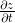（z 关于 t 的导数）和 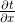（t 关于 x 的导数）的乘积表示。用数学式表示的话，可以写成式（5.2）。
（z 关于 x 的导数）可以用 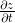（z 关于 t 的导数）和 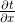（t 关于 x 的导数）的乘积表示。用数学式表示的话，可以写成式（5.2）。前面介绍的计算图的正向传播将计算结果正向（从左到右）传递，其计算过程是我们日常接触的计算过程，所以感觉上可能比较自然。而反向传播将局部导数向正方向的反方向（从右到左）传递，一开始可能会让人感到困惑。传递这个局部导数的原理，是基于链式法则（chain rule）的。本节将介绍链式法则，并阐明它是如何对应计算图上的反向传播的。
话不多说，让我们先来看一个使用计算图的反向传播的例子。假设存在 y = f (x) 的计算，这个计算的反向传播如图 5-6 所示。
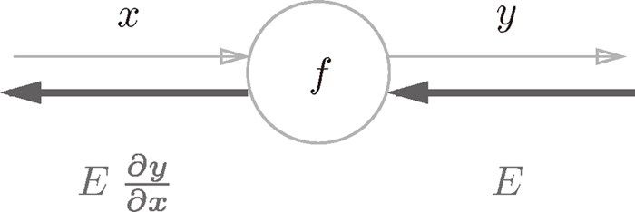
图 5-6 计算图的反向传播：沿着与正方向相反的方向，乘上局部导数
如图所示，反向传播的计算顺序是，将信号 E 乘以节点的局部导数 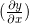，然后将结果传递给下一个节点。这里所说的局部导数是指正向传播中 y = f (x) 的导数，也就是 y 关于 x 的导数 。比如，假设 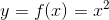，则局部导数为 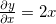。把这个局部导数乘以上游传过来的值（本例中为 E），然后传递给前面的节点。
这就是反向传播的计算顺序。通过这样的计算，可以高效地求出导数的值，这是反向传播的要点。那么这是如何实现的呢？我们可以从链式法则的原理进行解释。下面我们就来介绍链式法则。
介绍链式法则时，我们需要先从复合函数说起。复合函数是由多个函数构成的函数。比如，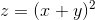 是由式（5.1）所示的两个式子构成的。
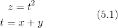
链式法则是关于复合函数的导数的性质，定义如下。
如果某个函数由复合函数表示，则该复合函数的导数可以用构成复合函数的各个函数的导数的乘积表示。
这就是链式法则的原理，乍一看可能比较难理解，但实际上它是一个非常简单的性质。以式（5.1）为例，（z 关于 x 的导数）可以用 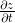（z 关于 t 的导数）和 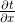（t 关于 x 的导数）的乘积表示。用数学式表示的话，可以写成式（5.2）。
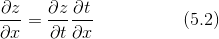
式（5.2）中的 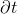 正好可以像下面这样“互相抵消”，所以记起来很简单。
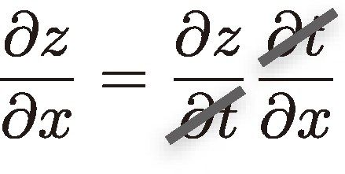
现在我们使用链式法则，试着求式（5.2）的导数 。为此，我们要先求式（5.1）中的局部导数（偏导数）。
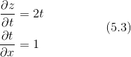
如式（5.3）所示， 等于 2t， 等于 1。这是基于导数公式的解析解。然后，最后要计算的 可由式（5.3）求得的导数的乘积计算出来。
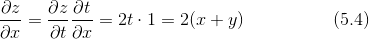
现在我们尝试将式（5.4）的链式法则的计算用计算图表示出来。如果用“**2”节点表示平方运算的话，则计算图如图 5-7 所示。
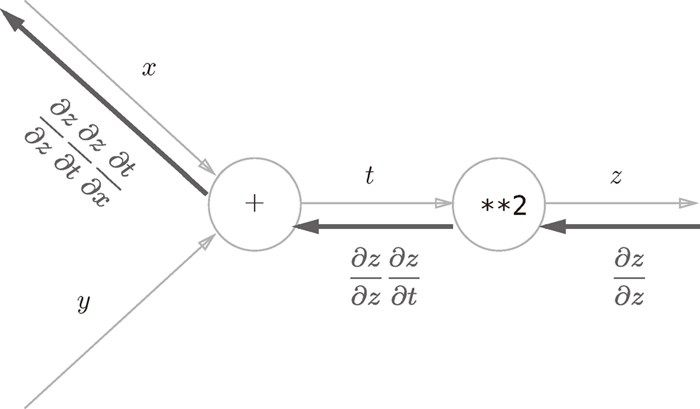
图 5-7 式（5.4）的计算图：沿着与正方向相反的方向，乘上局部导数后传递
如图所示，计算图的反向传播从右到左传播信号。反向传播的计算顺序是，先将节点的输入信号乘以节点的局部导数（偏导数），然后再传递给下一个节点。比如，反向传播时，“**2”节点的输入是 ，将其乘以局部导数 （因为正向传播时输入是 t、输出是 z，所以这个节点的局部导数是 ），然后传递给下一个节点。另外，图 5-7 中反向传播最开始的信号 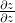 在前面的数学式中没有出现，这是因为 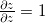，所以在刚才的式子中被省略了。
图 5-7 中需要注意的是最左边的反向传播的结果。根据链式法则，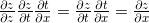 成立，对应“z 关于 x 的导数”。也就是说，反向传播是基于链式法则的。
把式（5.3）的结果代入到图 5-7 中，结果如图 5-8 所示， 的结果为 2(x + y)。
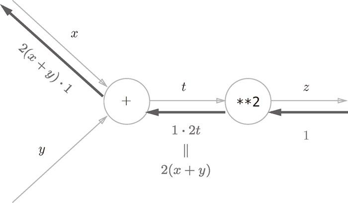
图 5-8 根据计算图的反向传播的结果，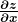 等于 2(x + y)